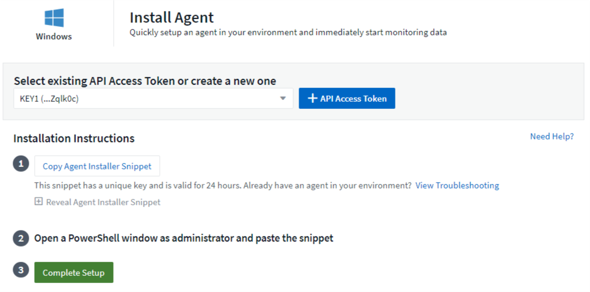
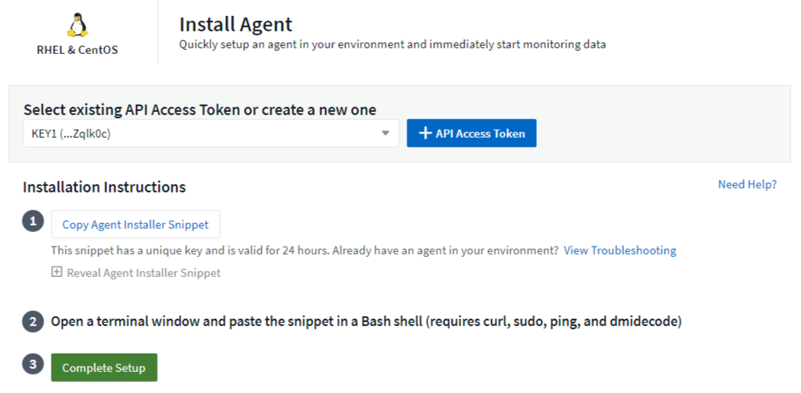
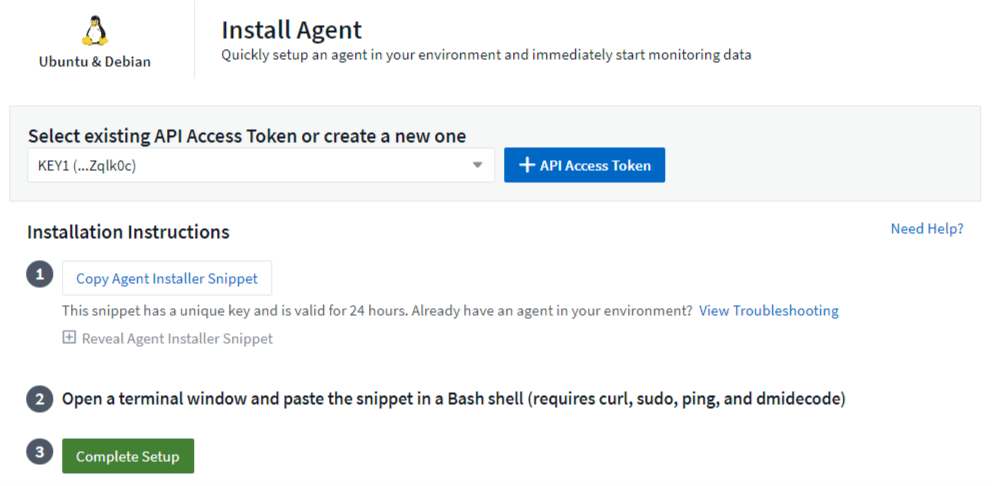
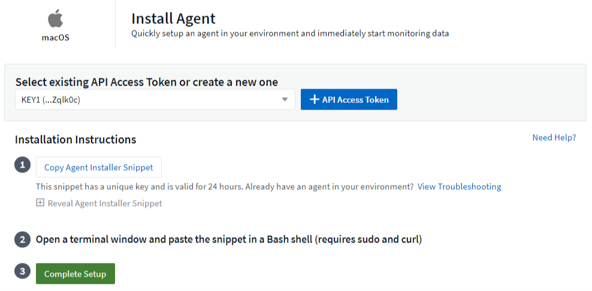
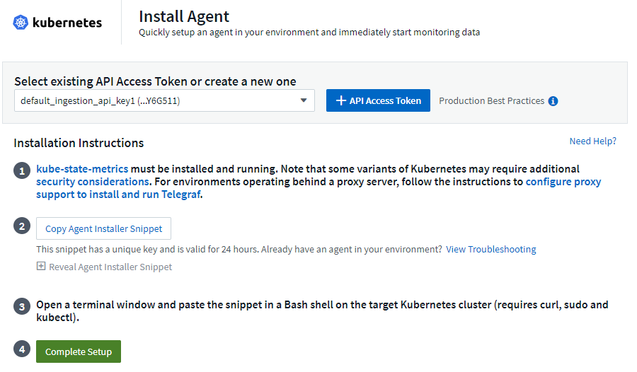

Configuring an Agent to Collect Data
Contributors
 Download PDF of this page
Download PDF of this page
Cloud Insights uses Telegraf as its agent for collection of integration data. Telegraf is a plugin-driven server agent that can be used to collect and report metrics, events, and logs. Input plugins are used to collect the desired information into the agent by accessing the system/OS directly, by calling third-party APIs, or by listening to configured streams (i.e. Kafka, statsD, etc). Output plugins are used to send the collected metrics, events, and logs from the agent to Cloud Insights.
The current Telegraf version for Cloud Insights is 1.17.3.
| For accurate audit and data reporting, it is strongly recommended to synchronize the time on the Agent machine using Network Time Protocol (NTP) or Simple Network Time Protocol (SNTP). |
Installing an Agent
If you are installing a Service data collector and have not yet configured an Agent, you are prompted to first install an Agent for the appropriate Operating System. This topic provides instructions for installing the Telegraf agent on the following Operating Systems:
To install an agent, regardless of the platform you are using, you must first do the following:
-
Log into the host you will use for your agent.
-
Log in to your Cloud Insights site and go to Admin > Data Collectors.
-
Click on +Data Collector and choose a data collector to install.
-
Choose the appropriate platform for your host (Windows, Linux, macOS, etc.)
-
Follow the remaining steps for each platform.
| Once you have installed an agent on a host, you do not need to install an agent again on that host. |
| Once you have installed an agent on a server/VM, Cloud Insights collects metrics from that system in addition to collecting from any data collectors you configure. These metrics are gathered as "Node" metrics. |
| If you are using a proxy, read the proxy instructions for your platform before installing the Telegraf agent. |
Windows

-
PowerShell must be installed
-
If you are behind a proxy, follow the instructions in the Configuring Proxy Support for Windows section.
-
Choose an Agent Access Key.
-
Copy the command block from the agent installation dialog. You can click the clipboard icon to quickly copy the command to the clipboard.
-
Open a PowerShell window
-
Paste the command into the PowerShell window and press Enter.
-
The command will download the appropriate agent installer, install it, and set a default configuration. When finished, it will restart the agent service. The command has a unique key and is valid for 24 hours.
-
Click Finish or Continue
After the agent is installed, you can use the following commands to start/stop the service:
Start-Service telegraf Stop-Service telegraf
Configuring Proxy Support for Windows
For systems residing behind a proxy, perform the following to set the https_proxy and/or http_proxy environment variable(s) PRIOR to installing the Telegraf agent:
[System.Environment]::SetEnvironmentVariable(“https_proxy”, “<proxy_server>:<proxy_port>”, [System.EnvironmentVariableTarget]::Machine)
Uninstalling the Agent
To uninstall the agent on Windows, do the following in a PowerShell window:
-
Stop and delete the Telegraf service:
Stop-Service telegraf sc.exe delete telegraf
-
Delete the C:\Program Files\telegraf folder to remove the binary, logs, and configuration files
-
Remove the SYSTEM\CurrentControlSet\Services\EventLog\Application\telegraf key from the registry
Upgrading the Agent
To upgrade the telegraf agent, do the following:
-
Stop and delete the telegraf service:
Stop-Service telegraf sc.exe delete telegraf
-
Delete the SYSTEM\CurrentControlSet\Services\EventLog\Application\telegraf key from the registry
-
Delete C:\Program Files\telegraf\telegraf.conf
-
Delete C:\Program Files\telegraf\telegraf.exe
RHEL and CentOS

-
The following commands must be available: curl, sudo, ping, and dmidecode
-
If you are behind a proxy, follow the instructions in the Configuring Proxy Support for RHEL/CentOS section.
-
Choose an Agent Access Key.
-
Copy the command block from the agent installation dialog. You can click the clipboard icon to quickly copy the command to the clipboard.
-
Open a Bash window
-
Paste the command into the Bash window and press Enter.
-
The command will download the appropriate agent installer, install it, and set a default configuration. When finished, it will restart the agent service. The command has a unique key and is valid for 24 hours.
-
Click Finish or Continue
After the agent is installed, you can use the following commands to start/stop the service:
If your operating system is using systemd (CentOS 7+ and RHEL 7+):
sudo systemctl start telegraf sudo systemctl stop telegraf
If your operating system is not using systemd (CentOS 7+ and RHEL 7+):
sudo service telegraf start sudo service telegraf stop
Configuring Proxy Support for RHEL/CentOS
For systems residing behind a proxy, perform the following steps PRIOR to installing the Telegraf agent:
-
Set the https_proxy and/or http_proxy environment variable(s) for the current user:
export https_proxy=<proxy_server>:<proxy_port>
-
Create /etc/default/telegraf, and insert definitions for the https_proxy and/or http_proxy variable(s):
https_proxy=<proxy_server>:<proxy_port>
Uninstalling the Agent
To uninstall the agent on RHEL/CentOS, in a Bash terminal, do the following:
-
Stop the Telegraf service:
systemctl stop telegraf (If your operating system is using systemd (CentOS 7+ and RHEL 7+) /etc/init.d/telegraf stop (for systems without systemd support)
-
Remove the Telegraf agent:
yum remove telegraf
-
Remove any configuration or log files that may be left behind:
rm -rf /etc/telegraf* rm -rf /var/log/telegraf*
Upgrading the Agent
To upgrade the telegraf agent, do the following:
-
Stop the telegraf service:
systemctl stop telegraf (If your operating system is using systemd (CentOS 7+ and RHEL 7+) /etc/init.d/telegraf stop (for systems without systemd support)
-
Remove the previous telegraf agent:
yum remove telegraf
Ubuntu and Debian

-
The following commands must be available: curl, sudo, ping, and dmidecode
-
If you are behind a proxy, follow the instructions in the Configuring Proxy Support for Ubuntu/Debian section.
-
Choose an Agent Access Key.
-
Copy the command block from the agent installation dialog. You can click the clipboard icon to quickly copy the command to the clipboard.
-
Open a Bash window
-
Paste the command into the Bash window and press Enter.
-
The command will download the appropriate agent installer, install it, and set a default configuration. When finished, it will restart the agent service. The command has a unique key and is valid for 24 hours.
-
Click Finish or Continue
After the agent is installed, you can use the following commands to start/stop the service:
If your operating system is using systemd:
sudo systemctl start telegraf sudo systemctl stop telegraf
If your operating system is not using systemd:
sudo service telegraf start sudo service telegraf stop
Configuring Proxy Support for Ubuntu/Debian
For systems residing behind a proxy, perform the following steps PRIOR to installing the Telegraf agent:
-
Set the https_proxy and/or http_proxy environment variable(s) for the current user:
export https_proxy=<proxy_server>:<proxy_port>
-
Create /etc/default/telegraf, and insert definitions for the https_proxy and/or http_proxy variable(s):
https_proxy=<proxy_server>:<proxy_port>
Uninstalling the Agent
To uninstall the agent on Ubuntu/Debian, in a Bash terminal, run the following:
-
Stop the Telegraf service:
systemctl stop telegraf (If your operating system is using systemd) /etc/init.d/telegraf stop (for systems without systemd support)
-
Remove the Telegraf agent:
dpkg -r telegraf
-
Remove any configuration or log files that may be left behind:
rm -rf /etc/telegraf* rm -rf /var/log/telegraf*
Upgrading the Agent
To upgrade the telegraf agent, do the following:
-
Stop the telegraf service:
systemctl stop telegraf (If your operating system is using systemd) /etc/init.d/telegraf stop (for systems without systemd support)
-
Remove the previous telegraf agent:
dpkg -r telegraf
macOS

-
The "curl" command must be available
-
If you are behind a proxy, follow the instructions in the Configuring Proxy Support for macOS section.
-
Choose an Agent Access Key.
-
Copy the command block from the agent installation dialog. You can click the clipboard icon to quickly copy the command to the clipboard.
-
Open a Bash window
-
Paste the command into the Bash window and press Enter.
-
The command will download the appropriate agent installer, install it, and set a default configuration. When finished, it will restart the agent service. The command has a unique key and is valid for 24 hours.
-
If you previously installed a Telegraf agent using Homebrew, you will be prompted to uninstall it. Once the previously installed Telegraf agent is uninstalled, re-run the command in step 5 above.
-
Click Finish or Continue
After the agent is installed, you can use the following commands to start/stop the service:
sudo launchctl start telegraf sudo launchctl stop telegraf
Configuring Proxy Support for macOS
For systems residing behind a proxy, perform the following to set the https_proxy and/or http_proxy environment variable(s) for the current user PRIOR to installing the Telegraf agent:
export https_proxy=<proxy_server>:<proxy_port>
AFTER installing the Telegraf agent, add and set the appropriate https_proxy and/or http_proxy variable(s) in /Applications/telegraf.app/Contents/telegraf.plist:
…
<?xml version="1.0" encoding="UTF-8"?>
<!DOCTYPE plist PUBLIC "-//Apple//DTD PLIST 1.0//EN" "http://www.apple.com/DTDs/PropertyList-1.0.dtd">
<plist version="1.0">
<dict>
<key>EnvironmentVariables</key>
<dict>
<key>https_proxy</key>
<string><proxy_server>:<proxy_port></string>
</dict>
<key>Program</key>
<string>/Applications/telegraf.app/Contents/MacOS/telegraf</string>
<key>Label</key>
<string>telegraf</string>
<key>ProgramArguments</key>
<array>
<string>/Applications/telegraf.app/Contents/MacOS/telegraf</string>
<string>--config</string>
<string>/usr/local/etc/telegraf.conf</string>
<string>--config-directory</string>
<string>/usr/local/etc/telegraf.d</string>
</array>
<key>RunAtLoad</key>
<true/>
</dict>
</plist>
…
Then, restart Telegraf after loading the above changes:
sudo launchctl stop telegraf sudo launchctl unload -w /Library/LaunchDaemons/telegraf.plist sudo launchctl load -w /Library/LaunchDaemons/telegraf.plist sudo launchctl start telegraf
Uninstalling the Agent
To uninstall the agent on macOS, in a Bash terminal, run the following:
-
Stop the Telegraf service:
sudo launchctl stop telegraf
-
Uninstall the telegraf agent:
cp /Applications/telegraf.app/scripts/uninstall /tmp sudo /tmp/uninstall
-
Remove any configuration or log files that may be left behind:
rm -rf /usr/local/etc/telegraf* rm -rf /usr/local/var/log/telegraf.*
Upgrading the Agent
To upgrade the telegraf agent, do the following:
-
Stop the telegraf service:
sudo launchctl stop telegraf
-
Uninstall the previous telegraf agent:
cp /Applications/telegraf.app/scripts/uninstall /tmp sudo /tmp/uninstall
Kubernetes

-
The following commands must be available: curl, sudo, kubectl
For best results, add these commands to the PATH.
-
kube-state-metrics must be installed. See below for more infomation.
-
If you are behind a proxy, follow the instructions in the Configuring Proxy Support for Kubernetes section.
-
If you are running a kubernetes variant that requires security context constraints, follow the instructions in the Configuring the Agent to Collect Data from Kubernetes section.
Monitoring is only installed on Linux nodes
Cloud Insights supports monitoring of Kubernetes nodes that are running Linux, by specifying a Kubernetes node selector that looks for the following Kubernetes labels on these platforms:
| Platform | Label |
|---|---|
Kubernetes v1.14 and above |
Kubernetes.io/os = linux |
Kubernetes v1.13 and below |
beta.kubernetes.io/os = linux |
Rancher + cattle.io as orchestration/Kubernetes platform |
cattle.io/os = linux |
Installation
-
Choose an Agent Access Key.
-
Click the Copy Agent Installer Snippet button in the installation dialog. You can optionally click the +Reveal Agent Installer Snippet button if you want to view the command block.
-
Open a Bash window.
-
Paste the command into the Bash window.
-
Optionally, you can override the namespace or provide the cluster name as part of the install command by modifying the command block to add one or both of the following before the final ./$installerName
-
CLUSTER_NAME=<Cluster Name>
-
NAMESPACE=<Namespace>
Scroll through the following example to see this in place in the command block:
installerName=cloudinsights-kubernetes.sh && token=<token> && key=c642e336-91f4-4c6f-8086-72faabd6aff6 && domain=tenant1.testk8.cloudinsights-test.netapp.com && curl -k -X GET -H "Authorization: Bearer $token" -H "X-CloudInsights-ApiKey-Id: $key" -o $installerName https://$domain/rest/v1/lake/telegraf/platforms/installer?platform=kubernetes && chmod +x $installerName && sudo --preserve-env JWT=$token DOMAIN_NAME=$domain API_KEY_ID=$key CLUSTER_NAME=TEST_CLUSTER NAMESPACE=NEW-NAMESPACE ./$installerName
CLUSTER_NAME is the name of the Kubernetes cluster from Cloud Insights collects metrics, while NAMESPACE is the namespace to which the Telegraf agent will be deployed. The specified namespace will be created if it does not already exist.
-
-
When ready, execute the command block.
-
The command will download the appropriate agent installer, install it, and set a default configuration. If you have not explicitly set the namespace, you will be prompted to enter it. When finished, the script will restart the agent service. The command has a unique key and is valid for 24 hours.
-
When finished, click Complete Setup.
A DaemonSet and ReplicaSet will be created on the Kubernetes cluster to run the required Telegraf agents/pods. By default, these Telegraf agents/pods will be scheduled on both master and non-master nodes.
To facilitate stopping and restarting of the agent, generate the Telegraf DaemonSet YAML and ReplicaSet YAML using the following commands. Note that these commands are using the default namespace "ci-monitoring". If you have set your own namespace, substitute that namespace in these and all subsequent commands and files:
If you have set your own namespace, substitute that namespace in these and all subsequent commands and files:
kubectl --namespace ci-monitoring get ds telegraf-ds -o yaml > /tmp/telegraf-ds.yaml kubectl --namespace ci-monitoring get rs telegraf-rs -o yaml > /tmp/telegraf-rs.yaml
You can then use the following commands to stop and start the Telegraf service:
kubectl --namespace ci-monitoring delete ds telegraf-ds kubectl --namespace ci-monitoring delete rs telegraf-rs
kubectl --namespace ci-monitoring apply -f /tmp/telegraf-ds.yaml kubectl --namespace ci-monitoring apply -f /tmp/telegraf-rs.yaml
Configuring Proxy Support for Kubernetes
For systems residing behind a proxy, perform the following to set the https_proxy and/or http_proxy environment variable(s) for the current user PRIOR to installing the Telegraf agent:
export https_proxy=<proxy_server>:<proxy_port>
AFTER installing the Telegraf agent, add and set the appropriate https_proxy and/or http_proxy environment variable(s) to the telegraf-ds daemonset and telegraf-rs replicaset.
kubectl edit ds telegraf-ds
…
env:
- name: https_proxy
value: <proxy_server>:<proxy_port>
- name: HOSTIP
valueFrom:
fieldRef:
apiVersion: v1
fieldPath: status.hostIP
…
kubectl edit rs telegraf-rs
…
env:
- name: https_proxy
value: <proxy_server>:<proxy_port>
- name: HOSTIP
valueFrom:
fieldRef:
apiVersion: v1
fieldPath: status.hostIP
…
Then, restart Telegraf:
kubectl delete pod telegraf-ds-* kubectl delete pod telegraf-rs-*
Configuring the Agent to Collect Data from Kubernetes
For Kubernetes environments, Cloud Insights deploys the Telegraf agent as a DaemonSet and a ReplicaSet. The pods in which the agents run need to have access to the following:
-
hostPath
-
configMap
-
secrets
These Kubernetes objects are automatically created as part of the Kubernetes agent install command provided in the Cloud Insights UI. Some variants of Kubernetes, such as OpenShift, implement an added level of security that may block access to these components. The SecurityContextConstraint is not created as part of the Kubernetes agent install command provided in the Cloud Insights UI, and must be created manually. Once created, restart the Telegraf pod(s).
apiVersion: v1
kind: SecurityContextConstraints
metadata:
name: telegraf-hostaccess
creationTimestamp:
annotations:
kubernetes.io/description: telegraf-hostaccess allows hostpath volume mounts for restricted SAs.
labels:
app: ci-telegraf
priority: 10
allowPrivilegedContainer: false
defaultAddCapabilities: []
requiredDropCapabilities: []
allowedCapabilities: []
allowedFlexVolumes: []
allowHostDirVolumePlugin: true
volumes:
- hostPath
- configMap
- secret
allowHostNetwork: false
allowHostPorts: false
allowHostPID: false
allowHostIPC: false
seLinuxContext:
type: MustRunAs
runAsUser:
type: RunAsAny
supplementalGroups:
type: RunAsAny
fsGroup:
type: RunAsAny
readOnlyRootFilesystem: false
users:
- system:serviceaccount:ci-monitoring:telegraf-user
groups: []
Installing the kube-state-metrics server
When you install the kube-state-metrics server you can enable collection of the following Kubernetes objects: StatefulSet, DaemonSet, Deployment, PV, PVC, ReplicaSet, Service, Namespace, Secret, ConfigMap, Pod Volume, and Ingress.
| It is strongly recommended to use kube-state-metrics version 2.0 or later in order to take advantage of the full feature set including the ability to link Kubernetes persistent volumes (PVs) to backend storage devices. |
Use the following steps to install the kube-state-metrics server:
-
Create a temporary folder (for example, /tmp/kube-state-yaml-files/) and copy the .yaml files from https://github.com/kubernetes/kube-state-metrics/tree/master/examples/standard to this folder.
-
Run the following command to apply the .yaml files needed for installing kube-state-metrics:
kubectl apply -f /tmp/kube-state-yaml-files/
kube-state-metrics Counters
Use the following links to access information for the kube state metrics counters:
Uninstalling the Agent
Note that these commands are using the default namespace "ci-monitoring". If you have set your own namespace, substitute that namespace in these and all subsequent commands and files.
To uninstall the agent on Kubernetes, do the following:
If the monitoring namespace is being used solely for Telegraf:
kubectl --namespace ci-monitoring delete ds,rs,cm,sa,clusterrole,clusterrolebinding -l app=ci-telegraf
kubectl delete ns ci-monitoring
If the monitoring namespace is being used for other purposes in addition to Telegraf:
kubectl --namespace ci-monitoring delete ds,rs,cm,sa,clusterrole,clusterrolebinding -l app=ci-telegraf
Upgrading the Agent
Note that these commands are using the default namespace "ci-monitoring". If you have set your own namespace, substitute that namespace in these and all subsequent commands and files.
To upgrade the telegraf agent, do the following:
-
Back up the existing configurations:
kubectl --namespace ci-monitoring get cm -o yaml > /tmp/telegraf-configs.yaml
-
Uninstall the Agent (see above for instructions)
Troubleshooting Agent Installation
Some things to try if you encounter problems setting up an agent:
| Problem: | Try this: |
|---|---|
I already installed an agent using Cloud Insights |
If you have already installed an agent on your host/VM, you do not need to install the agent again. In this case, simply choose the appropriate Platform and Key in the Agent Installation screen, and click on Continue or Finish. |
I already have an agent installed but not by using the Cloud Insights installer |
Remove the previous agent and run the Cloud Insights Agent installation, to ensure proper default configuration file settings. When complete, click on Continue or Finish. |
I do not see a hyperlink/connection between my Kubernetes Persistent Volume and the corresponding back-end storage device. My Kubernetes Persistent Volume is configured using the hostname of the storage server. |
Follow the steps to uninstall the existing Telegraf agent, then re-install the latest Telegraf agent. |
I’m seeing messages in the logs resembling the following: |
These messages may occur if your kube-state-metrics version is higher than your kubernetes version. For example, running kube-state-metrics version 2.0.0 or above with Kubernetes version 1.17. |
Additional information may be found from the Support page or in the Data Collector Support Matrix.
 Edit on GitHub
Edit on GitHub